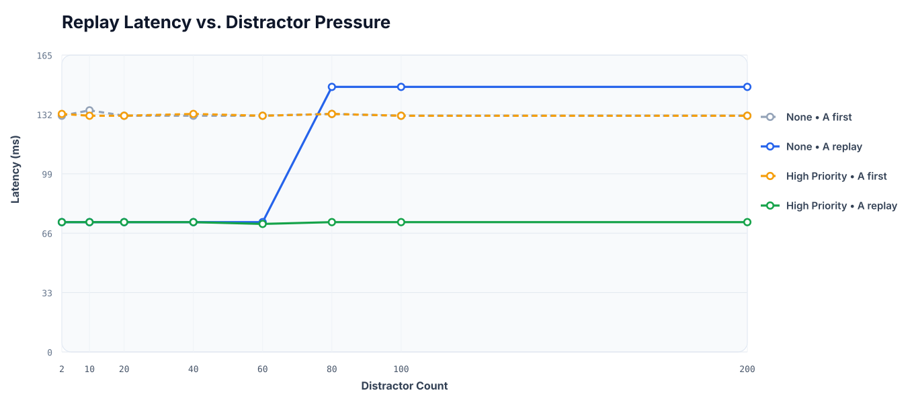

Synthetic Benchmark
→
Agent / Glue Scripts
→
Dynamo
→
SGLang
End-to-end workflow of the agentic retention setup
We supply frontend-agent hints and test whether they cause the SGLang worker to preserve reusable KV cache under pressure.
End-to-end workflow of the agentic retention setup
The experiment uses a controlled retention workload so hint effects can be compared under the same distractor pressure.
We instrumented the path so we can trace a hint from the frontend to worker-side cache behavior.
The request carries the hint payload and probe identity into the runtime path.
The worker-side logs tell us whether the hint object actually arrived.
We check that the system was ready to use the hint and whether replay stayed cached.
A valid attribution needs all three: sent, received, and runtime-ready.
Each sweep run sends the same protected prompt twice, with a configurable number of unique distractors in between. The control and protected rows are then compared side by side.
The control row sends A without a protective priority hint. Its replay behavior tells us what ordinary retention looks like under the chosen policy.
The protected row sends the same A request with a stronger priority profile. If the runtime respects it, replay A should remain warm deeper into the distractor sweep.
